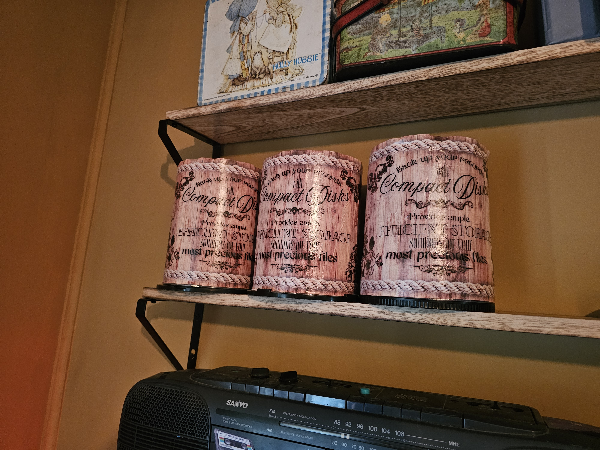

Styling a Keyboard as a Typewriter
Click photos to expand!
Designing the Printout
When you buy a bunch of blank CD-Rs and DVD-Rs for burning, they come in a stack called a cake. It was ruining my Victorian aesthetic, so I decided to make them fit in. I measured the dimensions of the cakes.I opened a new file in Canva and specified the correct dimensions. Then I took some of their designs. Wood for the background. I actually came up with the text myself. I thought it'd be fun if I advertised correctly that they were CDs, pretending they were around back then.
There's an effect for both the text and images where you can make it glow. I chose a dark warm brown. I wanted to make everything look like it was wood-burned on. Then I added some grunge/splotches that I browsed around for. Then I added a rope detail, like they were some kind of barrel.
Two of these designs have "CD-R" and "DVD-R" in a hand-written font.


Printing Out the Covers
I searched forever for a way to print something out to a specified physical size, but found nothing. I resorted to using my Cricut software to print only, not cut. Then I could specify in inches. I had to slice each one in half to get them to fit.Glueing and finishing
I used Mod Podge on the naked cake, then stuck on the 2 pieces one by one, lining up the text perfectly. It wasn't easy and not perfect, especially the 3rd one. But I made it work. Then I painted Mod Podge over the entire thing for brightness and durability.